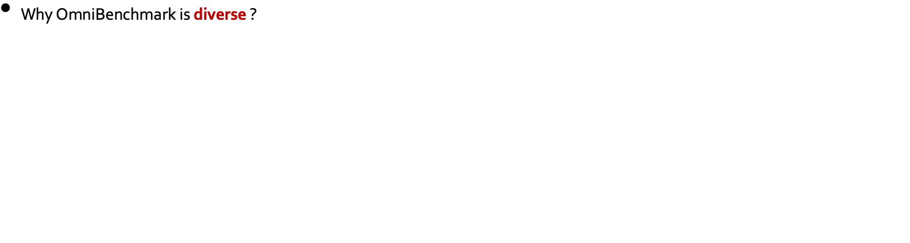
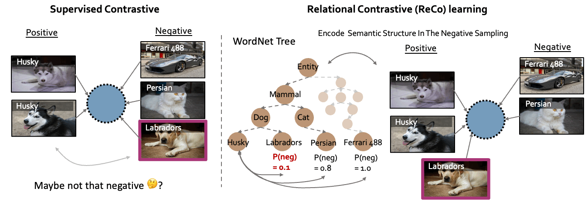

through the Lens of Visual Realms

TL;DR
New Benchmark
Omni-Realm Benchmark (OmniBenchmark) is a diverse (21 semantic realm-wise datasets) and concise (realm-wise datasets have no concepts overlapping) benchmark for evaluating pre-trained model generalization across semantic super-concepts/realms, e.g. across mammals to aircrafts.
New Supervised Contrastive Learning Framework
We introduces a new supervised contrastive learning framework, namely Relational Contrastive (ReCo) learning, that aims to be better suited for omni-vision representation.
Abstract
Though impressive performance has been achieved in specific visual realms (\eg faces, dogs, and places), an omni-vision representation generalizing to many natural visual domains is highly desirable. But, existing benchmarks are biased and inefficient to evaluate the omni-vision representation: either they can only evaluate specific realms, or they cover more realms at the expense of including more datasets that have concepts overlapping, resulting in repetitively evaluating several realms. In this paper, we propose Omni-Realm Benchmark (OmniBenchmark). It includes 21 realm-wise datasets with 7,372 concepts and 1,074,346 images. These realm-wise datasets cover most visual realms in the world and have no concept overlapping. With OmniBenchmark, we diagnose the advances in omni-vision representation studies in architectures (from CNNs to transformers) and in learning paradigms (from supervised learning to self-supervised learning). We reveal multiple practical observations to facilitate future research. Beyond that, we propose a new supervised contrastive learning framework, namely Relational Contrastive learning (ReCo), for a better omni-vision representation. ReCo pulls two classes belonging to the same visual realm closer instead of pushing them apart, learning the semantic relation between classes. Consequently, ReCo achieves superior performance on both ImageNet and OmniBenchmark.
Paper
Benchmarking Omni-Vision Representation through the Lens of Visual Realms
Yuanhan Zhang, Zhenfei Yin, Jing Shao and Ziwei liu
In Conference, 20XX.
@InProceedings{author20XXtitle,
title = {Creative and Descriptive Paper Title},
author = {Author, First and Author, Second and Author, Third and Author, Fourth and Author, Fifth},
booktitle = {Conference},
year = {20XX},
}Acknowledgements
TBA.